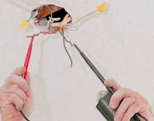

Качественный электромонтаж в Санкт-Петербурге и ленобласти, стаж 12 лет. Частный электрик, недорого и качественно.
Тел. 8 903 594 95 24 Николай.

Освещение прихожей, частный электрик.
Освещение прихожей остается одним из главных в любой квартире. Ведь прихожая традиционно остается самой темной комнатой всего жилища. И если важно с комфортом собраться ранним утром на работу или учебу, то к вопросу грамотного освещения прихожей нужно подойти с большим вниманием.
В качестве общего освещения рекомендуется использовать традиционную одно- или много рожковую люстру с придымленными стеклами. Если установить на люстру современные энергосберегающие лампы, то и экономия энергии окажется значительной. Для регулировки освещения рекомендуется установить на стену современный многоклавишный выключатель с серебряными (несгораемыми) контактами. Но выключатель еще нужно найти в кромешной темноте – именно поэтому рекомендуется покупать выключатель с диммерами, т.е. со встроенными светодиодами, которые будут гореть, когда выключатель будет оставаться выключенным.
Сколько стоит сделать освещение прихожей в СПБ?
| Вариант работы. | Цена в руб. |
Сделать электромонтаж прихожую под ключ. |
От 10 000. |
Очень важно обращать внимание на принцип подключения вышеуказанных люстр. При советской системе (она самая удобная) используется специальный крюк, тогда как при европейской – люстра устанавливается на специальные саморезы. Последнюю операцию обязательно должен устанавливать профессиональный электрик, тогда как вариант с крюком осилит любой хозяин жилища, имеющий минимальные знания по электрике и монтажу.
Для общего освещения рекомендуется использовать углубленные лампы со встроенными стальными прищепками, которые раскрываются в рабочем состоянии. Если данные виды ламп установить в пластиковом потолке, то в конечном итоге выйдет стильно и функционально – вся кухня с минимальными финансовыми затратами окажется ярко освещенной!
Для местного освещения рекомендуется устанавливать настенные бра, которые могут оснащаться либо мощными галогенными лампами, повернутыми вверх (это делается для оптического увеличения высоты потолка), либо энергосберегающими лампами. Все освещение радикальным образом улучшится, если внутрь шкафа-купе, у которого имеются удобные створчатые двери, установить большое зеркало, напротив которого рекомендуется установить либо бра, либо настенную пластиковую лампу. В последнем случае свет будет отражаться от основного зеркала, что позволит заполучить более сбалансированное освещение во всей прихожей.
 Поменять проводку в квартире.
Поменять проводку в квартире. Сколько будут стоить материалы.
Электрика в загородном доме стоимость работ.

Замена электропроводки в панельном доме.
Расценки на электропроводку квартир.
Замена проводки в хрущевке.
Электромонтаж в частном доме.
Электрика в загородном доме.
Сколько стоит замена электропроводки в двухкомнатной квартире?.
Электрик в новостройку однокомнатная квартира недорого.

Сколько стоит поменять электропроводку в 3-х комнатной квартире.